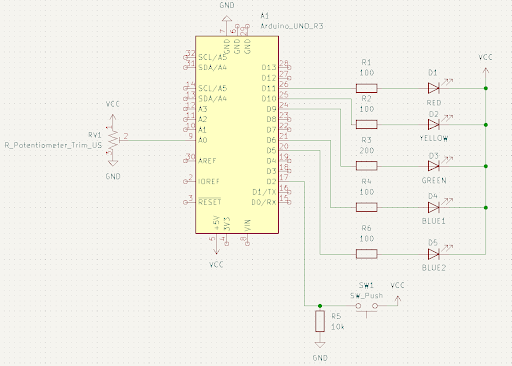
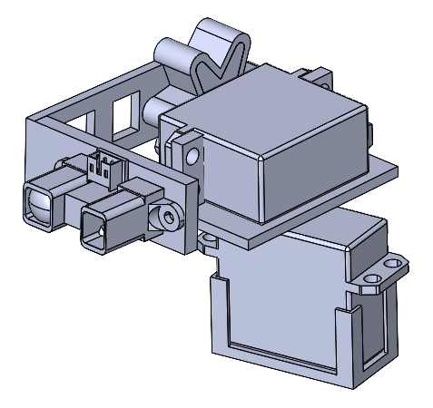
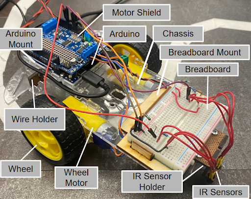
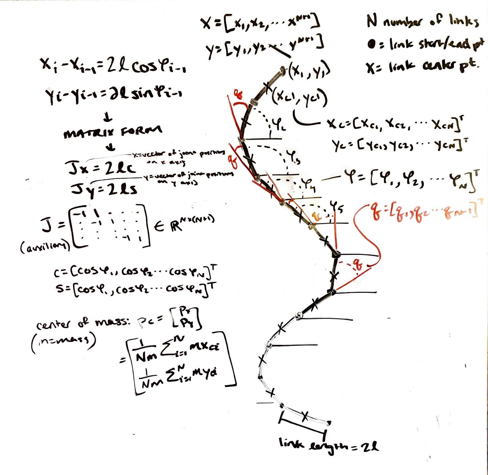

Projects

Bike Light
As the first project in PIE, this was an introduction to mechanical and electrical integration. I learned how to use Arduino to code different modes for the bike lights, and considered safety of riders when creating the modes. The bike light featured blinking, sequential illumination, and a dimming feature, controlled by a potentiometer. Another focus for this project was simple interface for any user to navigate. The case was 3D printed after measuring electrical components.

3D Scanner
The goal of this project was to use an IR sensor on a 2-servo movement mechanism and recreate a visualization of an object in front of it. The microcontroller was an Arduino, the visualization was done on MATLAB, and the parts holding the components were 3D printed from SolidWorks. In this project, I refined my CAD skills, integration with electrical systems skills, and documentation skills.

Line-Following Robot
The goal of this project was to create a line following robot. The robot used Arduino programming, laser-cut pieces to hold components, and IR sensors to keep the robot on track. In this project I refined my laser-cutting skills and team communication skills. A challenge that we faced was organization of electrical components, so I designed wire containers for the power supply wires and Arduino data wire. We also learned how to use WiFi to communicate with the Arduino, and could send commands without the data cable.

Soil Analyzing Snake Robot
I worked on a team of four in the course "Principles of Integrated Engineering" to create this robotic snake that takes soil measurements as controlled by a user. We worked together to integrate the mechanical aspects including the sensor mechanism and joints with software involving serpentine motion math, motor coding, and user interface.